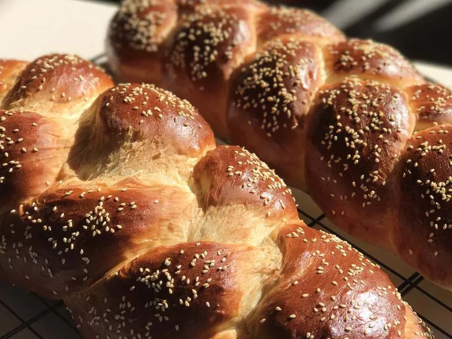

Challah Bread

Description
Challah bread is a white, leavened, braided bread with Ashkenazi Jewish origins. It's typically made with eggs,
yeast, flour, honey (or sugar), and salt.
Ingredients
- 2 ½ cups warm water (110 degrees F/45 degrees C)
- 1 tablespoon active dry yeast
- ½ cup honey
- 4 tablespoons vegetable oil
- 3 eggs, divided
- 1 tablespoon salt
- 8 cups unbleached all-purpose flour
- 1 tablespoon poppy seeds (Optional)
Steps
- Gather all ingredients.
-
Pour warm water into a large bowl; sprinkle yeast over water. Let stand until yeast softens and begins to form
a creamy foam, about 5 minutes.
-
Beat in honey, oil, 2 eggs, and salt. Add flour, 1 cup at a time, beating after each addition until dough has
pulled together.
- Turn it out onto a lightly floured surface and knead until smooth and elastic.
- Place dough in a large, lightly-oiled bowl and turn to coat.
-
Cover with a towel and let rise in a warm place until doubled in volume, about 1 ½ hours.
-
Punch down dough and turn onto a lightly floured surface. Divide in half and knead each half for 5 minutes or
so, adding flour as needed to keep it from getting sticky.
- Divide each half into thirds and roll into a long snake about 1 ½ inches in diameter.
-
Pinch the ends of the three snakes together firmly and braid from middle. Either leave as a braid or form into
a round braided loaf by bringing ends together, curving the braid into a circle, and pinching ends together.
-
Grease two baking trays and place the finished braid or round on each. Cover with a towel and let rise for
about 1 hour. Preheat the oven to 375 degrees F (190 degrees C).
- Beat the remaining egg and brush a generous amount over each braid; sprinkle with poppy seeds.
-
Bake in preheated oven until golden brown, about 40 minutes. Cool on a wire rack for at least one hour before
slicing.